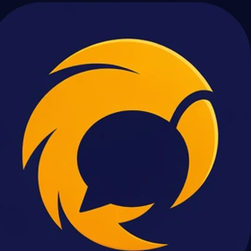

android
8.0+ (API 26-35)

TalonFast chat client for the parts of Urbit you actually use day-to-day — DMs, group channels, reactions, threads. Native on Android, Linux, macOS, and Windows. Bring your own ship.
There's no analytics, no third-party SDKs, no telemetry. The app speaks to the Urbit ship you point it at, and — if you turn on AI features — the AI provider whose key you've entered. That's the entire network surface.
API keys are stored encrypted on-device via AndroidX Security and only transmitted to the provider you select. They never reach the Talon developer.
Kotlin + Compose Multiplatform. ~26k lines of shared code across Android + JVM Desktop; per-platform leaves only where they have to be (file pickers, on-device AI backends, daily-digest scheduling, native notifications). Room for local storage, OkHttp for the SSE channel, kotlinx.serialization for everything on the wire. Mutation-tested at ~97% on the parsers and wire helpers; ~558 unit tests across the JVM test suite.
Pick your platform. Direct download links resolve to the latest tagged release; fall back to the releases page for older versions, signature checksums, and release notes.
On install: tap the APK; you may need to allow "Install unknown apps" for your browser or file manager. Future updates land via the in-app banner.
chmod +x the AppImage and run it; needs FUSE 2 (default on
most desktops). The .deb installs system-wide on Debian / Ubuntu and
derivatives.
Open the DMG and drag Talon to Applications. First launch: right-click → Open → Open. (Unsigned, so a normal double-click is blocked by Gatekeeper.)
Double-click the MSI to install. SmartScreen may warn — click "More info" → "Run anyway".
New to Urbit? urbit.org/getting-started walks you through booting a ship. Once you have the ship's HTTP URL and the +code output, log in inside Talon and you're done.